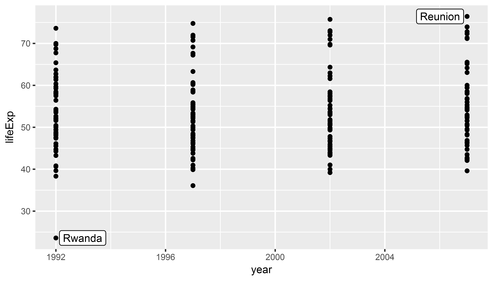

Session 5: General Tips and Next Steps
Saving your ggplot2 plots
We use the ggsave() function to export plots in any format we like. Simply include the ggsave() call after your ggplot2 building blocks, using variations of the following options
ggsave(filename = "./figures/rwanda_plot.png", # remember "figures" folder?
# ".png" suffix determines file type
plot = rwanda_plot, # which plot to save?
width = 8, height = 4.5, # values between 5 and 10 inches are reasonable
units = "in",
dpi = 300, # 300dpi = printing quality
scale = 0.8) # enlarge (< 1) / shrink (> 1) textWhere To Find Help
.font150[Data Visualization - A practical introduction]
by Kieran Healy (forthcoming Princeton University Press)

Where To Find Help
.font150[StackOverflow]
Tip: include the term “stack” and “ggplot” in your google query terms


Where To Find Help
When you're using a new R package and everything you try results in the red error code of nope #Rstats pic.twitter.com/tcBMypctwi
— Daniel Swindlehurst (@SwindleApe) 5. Dezember 2017
Cheatsheets

General Tips
- Press Tab to autocomplete!
- Use keyboard shortcuts
- Strg/Ctrl + Shift + M for
%>% - Alt + - for
<- - Shift + 1/2/3 switches between RStudio panes
- Strg/Ctrl + Shift + M for
- Name things often & understandably (e.g. not
m1butbaseline_model)- Follow a style guide
- Use comments
#often and judiciously- Comment out several lines of code with Strg/Ctrl + Shift + c
- Look for package vignettes on Google
class: inverse, center, middle
Questions?
Labels and Text
geom_text is useful for simple text display; geom_repel from the ggrepel package has more advanced functions.
library(tidyverse)
library(gapminder)
gapminder_africa <- gapminder %>%
filter(continent == "Africa") %>%
filter(year > 1990)
rwanda_plot <- ggplot(gapminder_africa,
aes(x = year, y = lifeExp)) +
geom_point() +
geom_text(aes(label = country)) # `label` is an aesthetic like `color`
# we map 'country' to labelLabels and Text
Labels and Text: Subset data first!
It often makes sense to create a separate data frame with the labels you want to you plot.
min_lifeexp <- gapminder_africa %>%
# select only observation with smallest
# or biggest lifeExp (outliers)
filter(lifeExp == min(lifeExp) | lifeExp == max(lifeExp))
rwanda_plot <- ggplot(gapminder_africa,
aes(x = year, y = lifeExp)) +
geom_point() +
geom_text(data = min_lifeexp,
aes(label = country)) Labels and Text: Subset data first!
Labels and Text: ggrepel
library(ggrepel)
rwanda_plot <- ggplot(gapminder_africa,
aes(x = year, y = lifeExp)) +
geom_point() +
geom_label_repel(data = min_lifeexp,
aes(label = country)) Labels and Text: ggrepel

Histograms and variable distributions
lifexp_histplot <- ggplot(gapminder,
aes(x = lifeExp)) + # note that no 'y' mapping
geom_histogram() +
facet_wrap(~ continent)
print(lifexp_histplot)Additional exercises
Plot a scatterplot of the relationship between
gdpPercapandlifeExpand adjust the point size to population.Install the
WDIpackage to access World Bank data. Use the help functionhelp(WDI)to find out how the package’s main functionWDI()works. Download data for GDP (indicator:NY.GDP.MKTP.CD) and corruption (indicatorIQ.CPA.TRAN.XQ). Try to plot the two variables for all countries in the world.